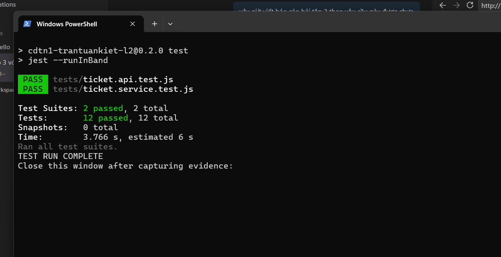
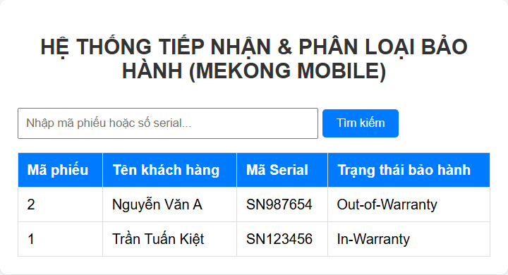
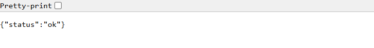
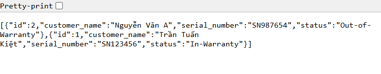

Tag yêu cầu: v1.0 — chưa tạo/push; cần tạo và xác minh tag trước khi nộp bản chính thức.
Link deploy: chưa có; bản demo hiện chạy local tại http://localhost:3000.
Bản mẫu được tổng hợp từ mã nguồn, tài liệu kiểm thử và phép chạy thực tế ngày 13/11/2026. Các giới hạn chưa kiểm chứng được nêu rõ, không thay thế xác nhận cuối cùng của sinh viên.
Phạm vi: quy tắc tiếp nhận ticket bảo hành L2, kiểm tra dữ liệu, quyền sở hữu thiết bị và các API đang được triển khai.
Đăng nhập/phân quyền người dùng; chuyển trạng thái và phân công kỹ thuật viên; tải đồng thời; bảo mật xâm nhập; trình duyệt tự động; kiểm thử khôi phục dữ liệu; và kiểm thử khởi tạo trên một máy hoàn toàn sạch.
npm test -- --runInBand chạy đủ 12/12 test; không có lỗi test.| Quy tắc | Mô tả | Test liên quan |
|---|---|---|
| QT-03 | Thiết bị tồn tại và thuộc customer yêu cầu. | T06, T10, T12 |
| QT-05 | Tính thời hạn theo ngày lịch; ngày cuối vẫn còn hạn. | T01–T04 |
| QT-06 | Ticket mới có mô tả hợp lệ và trạng thái Received. | T01, T05, T10, T11 |
| QT-07 | Tìm theo mã ticket, tên khách hàng hoặc serial. | T08, T09 |
Kết quả chi tiết và mức ưu tiên từng test được trình bày ở Mục 2. Phép thử trên máy sạch chưa được thực hiện; xem ghi chú giới hạn tại Mục 4.
Lệnh: npm test -- --runInBand • 2 suites, 12 tests, 0 failed • Repo giả lập cho API tests.
| ID | Preconditions | Steps | Test data | Expected result | Priority | Actual result | Status |
|---|---|---|---|---|---|---|---|
| T01 | Thiết bị thuộc customer; còn trong hạn. | Gọi service tạo ticket. | Mua 2026-01-01; 12 tháng; đồng hồ 2026-11-13. | In-Warranty; status Received. | High | Repository nhận đúng classification và status. | PASS |
| T02 | Thiết bị thuộc customer; hết hạn. | Gọi service tạo ticket. | Mua 2024-01-01; 12 tháng; đồng hồ 2026-11-13. | Out-of-Warranty. | High | Repository nhận Out-of-Warranty. | PASS |
| T03 | Ngày kiểm tra là ngày cuối bảo hành. | Gọi service tạo ticket. | Mua 2025-01-31; 1 tháng; ngày 2025-02-28. | Ngày cuối lịch vẫn được bảo hành. | High | Repository nhận In-Warranty. | PASS |
| T04 | Ngày kiểm tra sau hạn một ngày. | Gọi service tạo ticket. | Mua 2025-01-31; 1 tháng; ngày 2025-03-01. | Ngày kế tiếp là ngoài bảo hành. | High | Repository nhận Out-of-Warranty. | PASS |
| T05 | Thiếu payload ticket. | Gọi service với null. | null. | Từ chối INVALID_INPUT; không truy vấn repository. | High | Lỗi đúng mã; repository không được gọi. | PASS |
| T06 | Không tìm thấy quan hệ customer/device. | Tạo ticket bằng customer khác. | Customer 2; device 1. | Từ chối DEVICE_NOT_FOUND; không tạo ticket. | High | Lỗi đúng mã; create không được gọi. | PASS |
Test API chạy bằng Supertest với repository trong bộ nhớ; không dùng MySQL thật.
| ID | Preconditions | Steps | Test data | Expected result | Priority | Actual result | Status |
|---|---|---|---|---|---|---|---|
| T07 | Dữ liệu bảo hành thiết bị lưu trong repository sai định dạng. | Tạo ticket bằng device đó. | Ngày mua not-a-date; 12 tháng. | Từ chối INVALID_DEVICE_DATA; không tạo. | Medium | Lỗi dữ liệu đúng mã; create không được gọi. | PASS |
| T08 | API có 2 ticket giả lập. | Gọi health và danh sách. | Record ID 1, 2. | Health 200; list 200 và có hai record. | High | Cả hai phản hồi 200, đúng body. | PASS |
| T09 | Có serial SN123456. | Gửi cùng truy vấn hai lần. | GET /api/tickets?q=SN123456. | Hai kết quả giống nhau; có 1 record khớp. | Medium | Hai response giống nhau, một record. | PASS |
| T10 | Customer 1 sở hữu device 10. | POST payload hợp lệ. | Customer 1; device 10; mô tả Screen issue. | HTTP 201; ID 3; còn hạn; status Received. | High | HTTP 201; đúng các trường ticket mong đợi. | PASS |
| T11 | API có thể nhận request. | POST ID sai kiểu và mô tả rỗng. | Customer ID chuỗi "1"; description rỗng. | HTTP 400 INVALID_FORMAT; có field errors. | High | HTTP 400; lỗi customer_id và description. | PASS |
| T12 | Device 10 thuộc customer 1. | POST device đó dưới customer 2. | Customer 2; device 10. | HTTP 404; không tiết lộ serial. | High | HTTP 404; body không có serial. | PASS |
Smoke test Docker là kiểm tra thủ công tách riêng: hai container healthy; API đọc được hai customer/ticket mẫu. Chưa có automated integration test DB hoặc clean-machine test.
Các lỗi được phát hiện khi đối chiếu prototype với luồng L2. Regression tests được thêm sau khi sửa; không lưu lại lần chạy test đỏ trước sửa.
| ID / mức | Triệu chứng và nguyên nhân | Khắc phục | Kiểm chứng |
|---|---|---|---|
| BUG-01 Critical | Entry point không gắn warranty service và API ticket; app trả dữ liệu giả. | Nối app factory, route, service, repository MySQL; bỏ luồng giả. | T08, T10; Docker smoke. |
| BUG-02 Major | Route/validator vẫn theo payload Orders sau khi đổi domain. | Thay bằng GET/POST /api/tickets, kiểm tra customer/device/mô tả. | T08–T12. |
| BUG-03 Major | Schema/seed Users/Products/Orders không khớp repository ticket. | Tạo Customers, Devices, Tickets với khóa ngoại; cập nhật seed mẫu. | MySQL 8.4 khởi tạo; GET trả 2 record. |
| BUG-04 Major | Thời hạn tháng có thể tràn qua tháng sau; ngày cuối bị phân loại sai. | Giới hạn ngày theo ngày cuối tháng đích; so sánh ngày lịch. | T03, T04. |
| BUG-05 Major | Tên khách hàng tiếng Việt bị lỗi mã hóa khi nhập seed MySQL. | Đặt charset utf8mb4 trong seed và nạp lại dữ liệu. | Seed vào schema MySQL trống cho bytes UTF-8 đúng; UI hiển thị tên đúng. |
13456e0 và 8a0fa7c. Sửa charset seed và các cập nhật tài liệu trong báo cáo hiện chưa commit. Branch chưa push; tag v1.0 chưa được tạo/publish. Không coi các liên kết commit local là tài liệu public cho tới khi push.
Chưa có automated DB integration/clean-machine test, authentication, rate limiting, log audit, hoặc dependency audit. Chưa ghi nhận lỗi Critical còn mở trong kiểm tra tự đánh giá này; đây không phải pentest.
docker compose up -d --build --waitdocker compose psỨng dụng: http://localhost:3000; liveness: http://localhost:3000/health; danh sách: http://localhost:3000/api/tickets. Ở lần đầu volume rỗng, MySQL chạy migration rồi sample seed.
| Biến | Default local | Mục đích |
|---|---|---|
| PORT | 3000 | Cổng API host. |
| DB_HOST / DB_PORT | db / 3306 | Địa chỉ MySQL trong Compose. |
| DB_NAME | mekong_crm | Tên database. |
| DB_USER / DB_PASSWORD | warranty_app / local demo | Tài khoản app nội bộ mạng Compose. |
| MYSQL_ROOT_PASSWORD | local demo | Tài khoản root MySQL trong container. |
docker compose ps: xác nhận api và db healthy.GET /health: HTTP 200, {"status":"ok"}; chỉ kiểm tra liveness.GET /api/tickets: xác nhận hai record mẫu được đọc từ MySQL.npm test -- --runInBand (12 test tự động).docker compose down. Không dùng down -v nếu muốn giữ volume.Chưa xác nhận cài đặt trên máy hoàn toàn sạch; không có link deploy public. Mật khẩu mặc định chỉ dành cho local demo, không dùng production.
Tự đánh giá prototype ngày 13/11/2026; không phải kết quả kiểm thử xâm nhập.
| # | Hạng mục | Trạng thái | Bằng chứng / việc còn thiếu |
|---|---|---|---|
| 1 | Không để secrets trong repository. | Đã làm | .env được ignore; demo values nằm ở .env.example, không phải production secrets. |
| 2 | Validate input ở application layer. | Đã làm | ID số nguyên dương; mô tả 1–1.000 ký tự; T11 kiểm tra 400 và chi tiết lỗi. |
| 3 | Authorization/ownership. | Chưa đủ | Kiểm tra device/customer match; không có đăng nhập nên client có thể giả customer ID. Chưa phải authenticated authorization. |
| 4 | Mã hóa password và dữ liệu nhạy cảm. | Chưa làm | Chưa có đăng nhập; dữ liệu khách hàng chưa mã hóa at rest/transport trong demo. |
| 5 | Không lộ lỗi nội bộ trong response. | Đã làm | Response lỗi 500 tổng quát; không trả SQL/stack trace/connection string. |
| 6 | Log không chứa secrets/PII không cần thiết. | Đã làm | Log giới hạn startup và error code; không ghi request body/customer data. |
| 7 | Lockfile và dependency audit. | Chưa đủ | Có package-lock.json; chưa chạy/lưu kết quả npm audit cho lần nộp này. |
/api/ticketsEntry point app.js khởi tạo connection pool và ghép repository → service → Express app. Health endpoint chỉ kiểm tra liveness, không thay thế readiness check cho DB.
| Entity / field | Kiểu / ràng buộc | Ý nghĩa |
|---|---|---|
| Customers customer_id full_name | INT PK VARCHAR(100) NOT NULL VARCHAR(150) UNIQUE | Khách hàng đăng ký thiết bị. |
| Devices device_id customer_id serial_number purchase_date warranty_months | INT PK FK → Customers VARCHAR(100) UNIQUE DATE SMALLINT UNSIGNED | Thiết bị, chủ sở hữu, serial, ngày mua và thời hạn bảo hành theo tháng. |
| Tickets ticket_id customer_id / device_id issue_description warranty_status / status created_at | BIGINT PK FK → Customers / Devices VARCHAR(1000) ENUM / ENUM TIMESTAMP | Yêu cầu bảo hành; trạng thái mới là Received. |
Received.| Method / path | Request | Success | Lỗi chính |
|---|---|---|---|
| GET /health | Không có body. | 200 {"status":"ok"} | Chỉ liveness; không chứng minh kết nối DB. |
| GET /api/tickets?q={text} | q optional, tối đa 100 ký tự. | 200; JSON array gồm ID, tên khách, serial, trạng thái bảo hành. | 400 INVALID_QUERY; 500 INTERNAL_SERVER_ERROR. |
| POST /api/tickets | {"customer_id":1,"device_id":10,"issue_description":"Screen issue"} | 201; ticket ID, customer/device, description, warranty status, status. | 400 INVALID_FORMAT/INVALID_JSON; 404 DEVICE_NOT_FOUND; 500. |
{"status":"success","data":{"ticket_id":3,"customer_id":1,"device_id":10,"issue_description":"Screen issue","warranty_status":"In-Warranty","status":"Received"}}device_id và customer_id.Không authentication, pagination, rate limit, idempotency key, phân công kỹ thuật viên, hay endpoint cập nhật trạng thái. Search substring không phân quyền record. Các API examples trong test dùng repository giả lập; kiểm chứng MySQL được trình bày riêng ở Mục 7.
docs/api-contract.md, docs/srs.md, migrations/001_init_schema.sql, seeds/001_sample_data.sql.Ảnh được chụp từ lần chạy trực tiếp ngày 13/11/2026. Test output là cửa sổ PowerShell thật; các ảnh endpoint/UI là trình duyệt local đọc dữ liệu MySQL. Docker inspect xác nhận cả api và db healthy.

npm test -- --runInBand: 2 suites, 12 tests PASS.

GET /health trả {"status":"ok"}; Docker api/db healthy.
GET /api/tickets trả hai record MySQL, tên tiếng Việt đúng.Học phần: Chuyên đề Tốt nghiệp 1 • Học kỳ: HK1, năm học 2026–2027 • Bài nộp: BT3
Sinh viên: Trần Tuấn Kiệt • MSSV: 2374802010263 • Track: SE • Luồng: L2 — Tiếp nhận và phân loại yêu cầu bảo hành.
| Công cụ AI | Dùng vào việc gì | Phần áp dụng | Đã kiểm chứng / chỉnh sửa thế nào |
|---|---|---|---|
| Gemini | Gợi ý cấu trúc Node.js, health endpoint; soát chính tả và định dạng tài liệu. | app.js, src/index.js, README, SRS. | Đã chạy server/API và đọc soát thông tin sinh viên, nội dung L2. |
| Copilot SDK in VS Code | Rà soát L2; nối route/service/repository; hỗ trợ unit/API tests, Docker và hồ sơ BT3. | src/, tests/, Docker, migration/seed, docs BT3. | 12/12 test PASS; Compose API/MySQL healthy; kiểm tra GET health/tickets và sửa charset seed. Automated API tests không gọi DB thật. |
Chữ ký / họ tên sinh viên: Trần Tuấn Kiệt ____________________
Ngày khai báo: 13/11/2026
Sinh viên cần đọc lại và chỉnh mọi chi tiết chưa chính xác trước khi ký/nộp. Tag v1.0 cần được tạo và publish riêng; báo cáo hiện ghi rõ tag chưa tồn tại để tránh tạo thông tin sai.